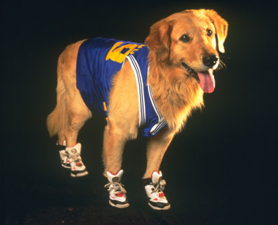

Stunned Jury Forced to Find Buddy "Air Bud" Framm Not Guilty
March 2, 2018

SEATTLE - The Framm family could only look on in horror as the Jury read the verdict. After a five month trial in which the golden retriever, Buddy, formerly Old Blue, was accused of rape and murder of his 12 year-old ex-teammate Joshua Framm. Dental records confirmed that the teeth marks found on Josh's neck and legs matched Buddy's perfectly. However, after much deliberation the Jury concluded that nowhere in the states law book does it specifically say that a dog can't rape and murder.